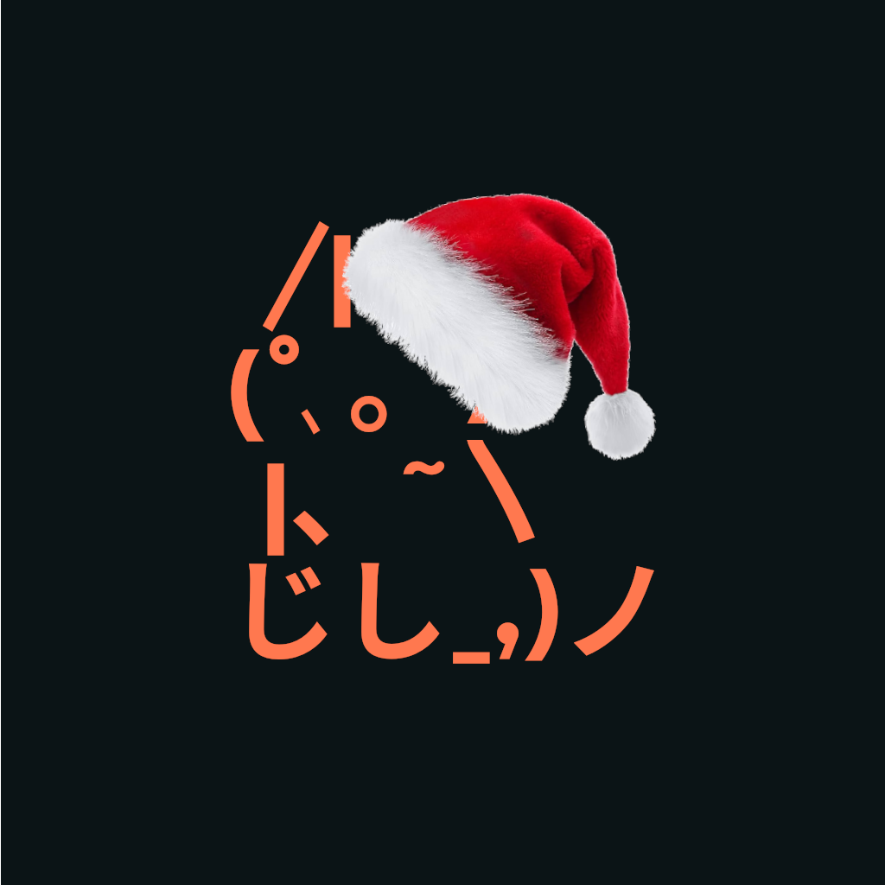

Main
quick info
hello! I'm lannabann, although I go by many aliases (see about)
I'm 14 and also trans, I don't label my sexuality anymore, if you don't respect that then fuck off <3
I've been using linux since the age of 12(ish, can't remember exactly), and have been making random stuff since the age of 11 (9 if you count scratch)
I'm currently using rust and have been trying on and off to get better at drawing, start learning linear algebra, and get into graphics programming (although have been having difficulties since it's generally (by generally, I mean I'm going off of one acerola video) recommended you instead use an already existing engine, mostly unity, but unity has shitass support for any code editor/IDE other than vs code and visual studio, and if you don't wanna use an engine your only other option is a graphics API or library, and while rust is capable of graphics programming, pretty much all of your options are either just openGL wrappers (glium), or severely lack any sort of tutorials (miniquad), so far the only exception I've seen is wgpu, which takes inspiration from vulkan and isn't beginner friendly)
((speaking of miniquad, I find it very funny that most responses on reddit are just people saying "just use macroquad instead"))
this is not an exhaustive list of my interests, if you want to find more information about me, I recommend you go to the respective links below
circles
I'm not into any circles bweh